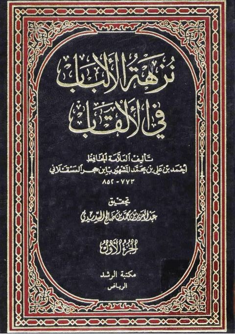

Downloads need an internet connection.
نزهة الألباب في الألقاب
Authors: أحمد بن علي بن حجر العسقلاني
Editors: عبد العزيز بن محمد صالح السديري
Publishers: مكتبة الرشد ناشرون
**▫️ العنوان: نزهة الألباب في الألقاب** ▪️ المؤلف: #أحمد_بن_علي_بن_حجر_العسقلاني ▫️ المحقق: #عبد_العزيز_بن_محمد_بن_صالح_السديري ▪️ الناشر: #مكتبة_الرشد_للنشر_والتوزيع ▫️ تاريخ النشر: 1409هـ 1984م ▪️ بلد النشر: الرياض، #السعودية ▫️ الطبعة: 1 ▪️ عدد الأجزاء: 2 ▫️ الصفحات: 956 ▪️ نوع الوعاء: #كتاب ▫️ التصنيف الرئيسي: #الحديث_وعلومه ▪️ التصنيف الفرعي: #تراجم ۪